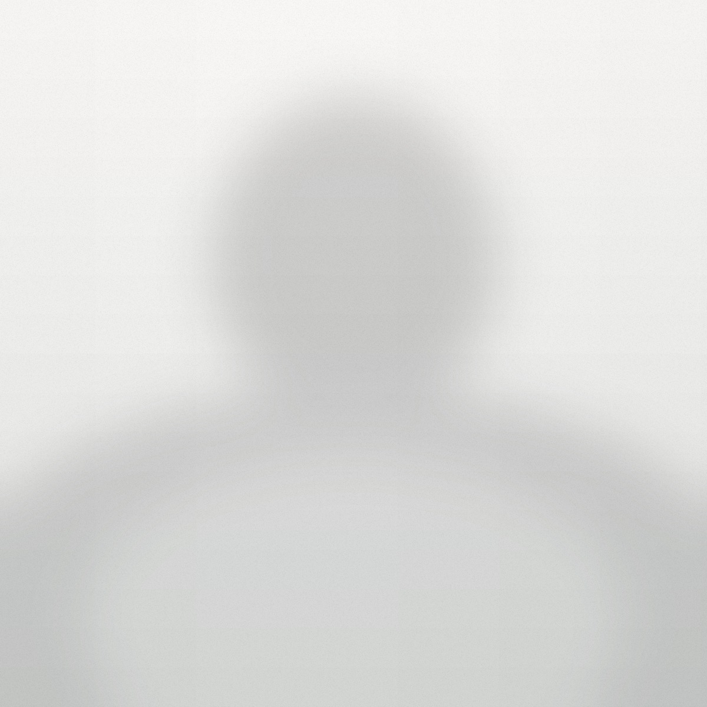

Geonwoo Kim 김건우
I am an econometrician interested in how we can learn from and conduct valid inference with noisy, high-dimensional, and algorithmically generated data. Currently, I am a Research Professional in Econometric Theory at the University of Chicago working with Azeem Shaikh and Kirill Ponomarev. I received a B.A. in Mathematics with Honors from Grinnell College, where I was advised by Jeffrey Blanchard. My name is pronounced “guhn-woo,” and I go by Patrick.